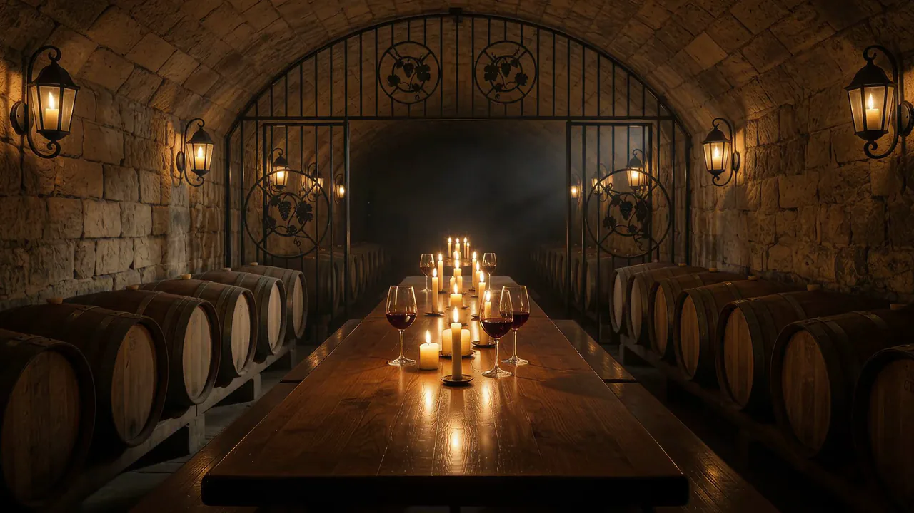
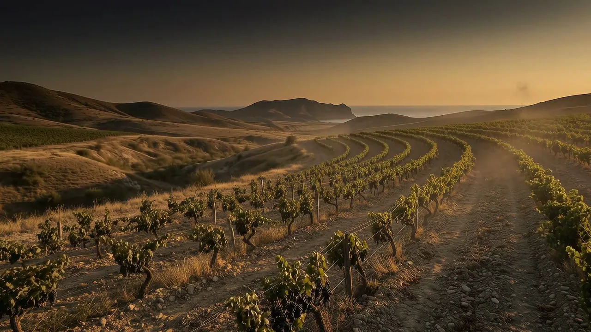
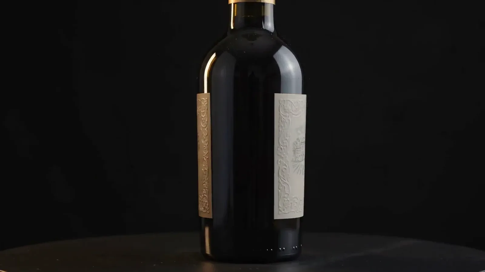
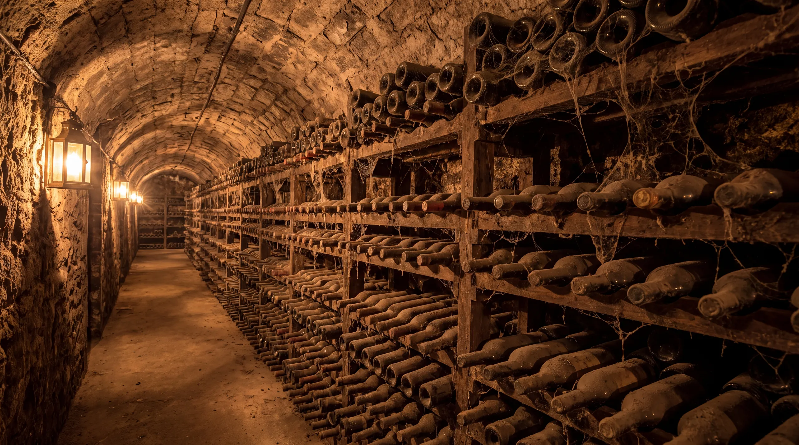
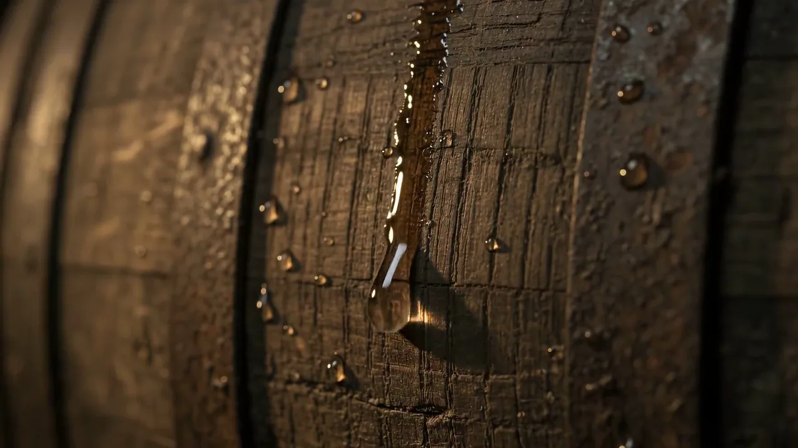

Четыре сорта, которых нет больше нигде

Чёрный Доктор. Эким Кара со старых лоз
Не менее трёх лет в дубовых бочках
16 % об. · 160 г/дм³
Четыре линейки — четыре мира


1888
Горчаков покупает Токлукское имение. Голицын строит винодельню и подвал №1.
Заложен винподвал №4 — общая ёмкость выдержки двести тысяч декалитров.
Виноградники, запущенные к 1929-му, начинают восстанавливать.
«Архадерессе» входит в совхоз «Солнечная Долина». Имя остаётся навсегда.
Долина начинает выпуск сухих вин.
Сто тридцать восьмой урожай.
Здесь солнце сушит камень, а камень держит лозу. Эким Кара, Джеват Кара, Кефесия, Кокур — сорта, которые не прижились больше нигде на земле. Сто тридцать восемь лет одна долина делает вино, которое невозможно повторить в другой.

Цвет вина
Гранатовый с рубиновыми бликами


Дегустационный комплекс «Архадерессе»
Экскурсия по трём голицынским подвалам и дегустация десяти марок вин — один час двадцать минут.
Забронировать дегустацию